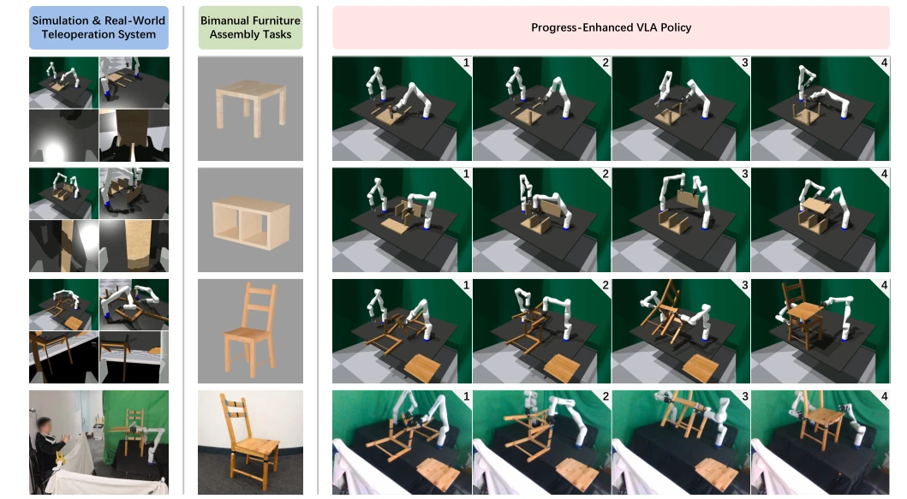
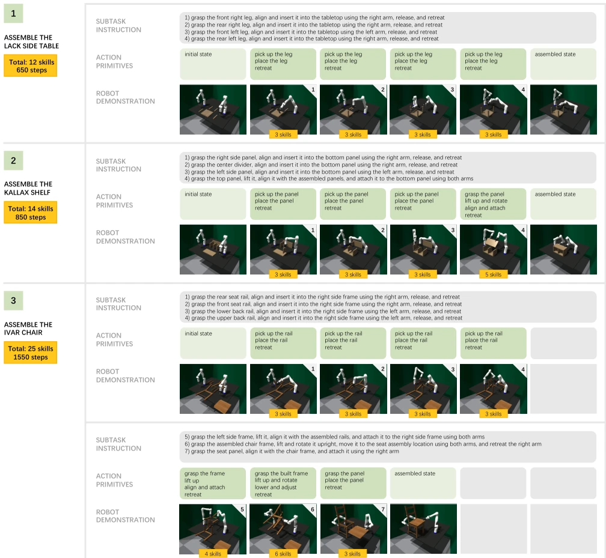
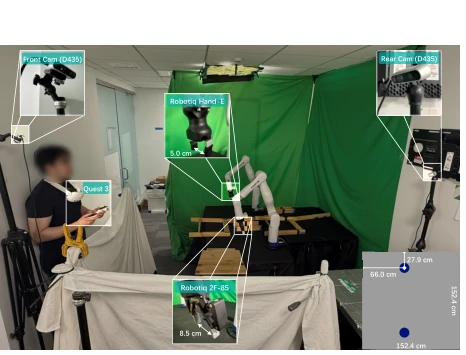
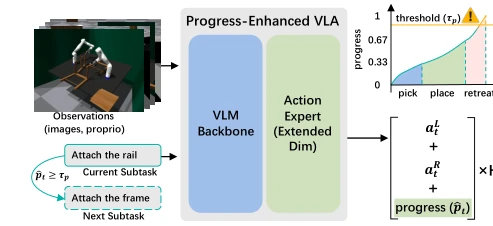
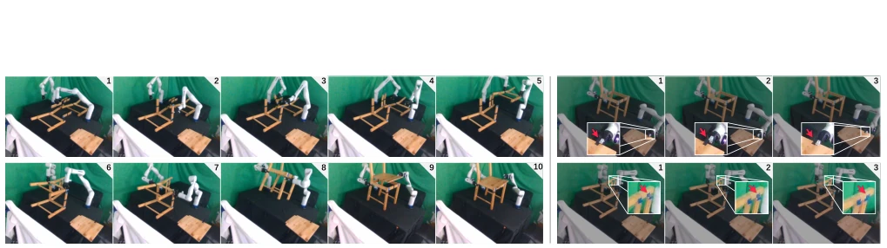
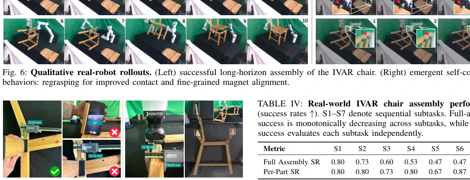
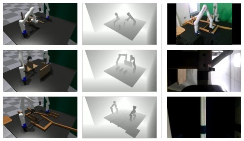
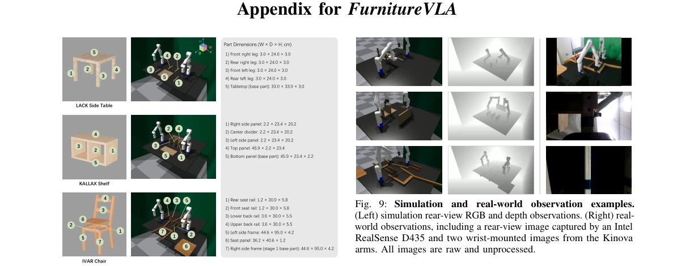
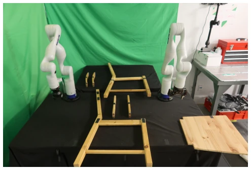
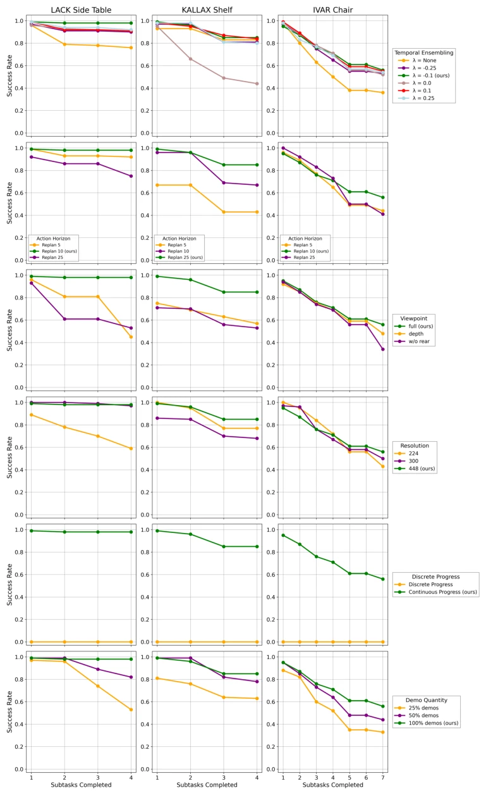

This FurnitureVLA attempts to handle full-size dual-arm furniture assembly using VLA, which is indeed ambitious. It builds a complete sim-to-real pipeline, especially the VR teleoperation for data collection is pragmatic, solving the pain point of scarce long-horizon data. However, replacing screws with magnets solves physical simulation difficulties but diminishes the task difficulty, after all, screwing is the soul of assembly, magnetic alignment is too easy. Progress-Enhanced VLA switches subtasks by predicting progress signals, stronger than direct end-to-end, but real robot experiment success rate still dropped 16%, indicating the sim-to-real gap remains hard to fill. Overall, this is a solid System work, providing a new paradigm for long-horizon manipulation, but do not expect it to assemble IKEA furniture for you tomorrow, after all it still relies on fixed base and magnets, far from general-purpose robots.
Furniture assembly is the "Mount Everest" of embodied intelligence, long-horizon, high precision, dual-arm coordination are indispensable. Existing work mostly focuses on toy scale or single-arm manipulation [1]-[8], struggling to cope with the size and weight of real furniture. Although VLA performs excellently in short-horizon tasks [11], [12], distribution shift and error accumulation issues are severe in long-horizon execution [13], [14]. Existing methods either rely on manual planning [16] or lack general policies [4]. How to train a dual-arm general policy capable of handling long sequences and high geometric constraints remains an open problem. This paper aims to fill this gap, exploring the potential of VLA in real-scale assembly through systematic simulation and real-world data, solving the problem of cascading failure caused by early error propagation.

Fig. 1: Real-scale bimanual furniture assembly with Vision-Language-Action models. We introduce FurnitureVLA, the first systematic study of this challenging setting. It comprises a scalable simulation pipeline for data generation and evaluation, and a tailored VR teleoperation system for high-quality demonstration collection. We propose a progress-enhanced VLA to tackle long-horizon assembly.

Fig. 2: Bimanual furniture assembly tasks. These tasks require executing diverse manipulation skills over extremely long horizons. A simple item (LACK side table) requires 12 skill executions (650 steps), while a complex assembly (IVAR chair) requires 25 (1550 steps).
The overall process is divided into three stages: simulation data generation, VR real-world data collection, and VLA fine-tuning. The core innovation is Progress-Enhanced VLA. First, decompose long tasks into semantically clear subtasks, and define continuous progress signals within each subtask based on action primitives (pick, place, retreat). Second, subtask boundaries are set at the "retreat" state rather than contact state, reducing state distribution shift caused by contact force constraints. VLA predicts actions and progress simultaneously, automatically switching subtasks when progress exceeds a threshold, without needing an external scheduler. Additionally, perception and control design factors were studied, such as Temporal Ensembling, action horizon, camera view, and resolution, to optimize accuracy. Isaac Gym was used to generate expert data in simulation, and Quest 3 teleoperation was used for real robots to ensure data quality. The model is fine-tuned based on π0.5, decoding action blocks via Flow Matching, enhancing long-horizon stability.

Fig. 3: System setup. The teleoperator wears a Meta Quest 3 headset at the neck to track hand poses. A green screen reduces visual noise; a white cover occludes the teleoperator. Bottom-right: tabletop schematic with symmetric dual Kinova placement.

Fig. 4: FurnitureVLA: progress-enhanced VLA. Each assembly is decomposed into subtasks with continuous progress labels derived from action primitives. The VLA is finetuned to jointly predict actions and a progress signal, which triggers automatic subtask transitions during inference.
Tested on three types of furniture: LACK, KALLAX, IVAR. Baselines include π0.5 zero-shot and single-task fine-tuning. In simulation, FurnitureVLA average success rate improved from 48% to 80%. Verified on real robot on IVAR, success rate dropped 16% compared to simulation. Ablation studies show continuous progress signals are superior to discrete signals, the latter causing the model to get stuck within subtasks. Among design factors, Temporal Ensembling and high resolution significantly improve accuracy, rear-view camera is effective for occlusion. Data volume increase from 25% to 100% brings gains, but marginal effects diminish. Real robot observations show the robot can spontaneously perform fine-tuning, such as re-grasping and magnetic alignment, reflecting the robustness of the policy. IVAR subtask 5 is the most difficult, involving dual-arm coordinated rotation.

Fig. 6: Qualitative real-robot rollouts. (Left) successful long-horizon assembly of the IVAR chair. (Right) emergent self-correction behaviors: regrasping for improved contact and fine-grained magnet alignment.

Fig. 7: Real-world precision requirements. (Left) assembly tolerance with magnets. (Right) gripper clearance and multi-magnet alignment challenges.

Fig. 9: Simulation and real-world observation examples. (Left) simulation rear-view RGB and depth observations. (Right) real- world observations, including a rear-view image captured by an Intel RealSense D435 and two wrist-mounted images from the Kinova arms. All images are raw and unprocessed.

Fig. 8: Furniture part taxonomy and geometric properties. Illustration of part naming, dimensions, and base part definition used in assembly. For the IVAR chair stage 1 definition, see Sec. B.2.
其他图片Other Figures

Fig. 10: IVAR chair assembly initialization.

Fig. 12: Subtask success rates under different design choices. Results correspond to Table II and Table III.